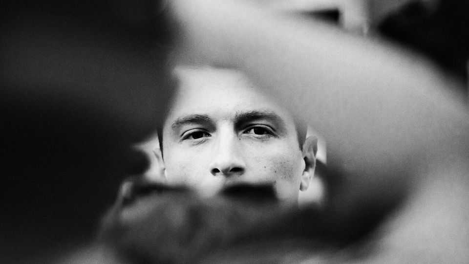

Meeting Jordan Bardella, France’s possible president
The 30-year-old populist will run if Marine Le Pen is banned. Who is he?
July 2nd 2026

The rue Gabriel Péri in Saint-Denis is typical of a northern Paris suburb. Skinned lambs’ heads are lined up in the butcher’s window; T-shirts in a wire basket go for €2 ($2.30) at a discount shop; bootleggers flog contraband cigarettes on the pavement. Here, in an eight-storey housing estate in the capital’s most populous banlieue, Jordan Bardella grew up. The 30-year-old’s journey from shy, pale-faced teenager to head of the populist-right National Rally (RN) is remarkable. On July 7th it could take a further twist: Marine Le Pen, his mentor, will learn whether an appeals court upholds her ban on running for office over misuse of European funds. If so, next April Mr Bardella will be the RN’s candidate for the French presidency.
“I was in no way destined to end up where I am today,” reflects Mr Bardella over coffee at the European Parliament, where he is an RN deputy. That the thought might have crossed his teenage mind, he says, is “impossible”. By his own admission “very shy” at that age, he spent hours in his bedroom playing “Call of Duty” or “FIFA”. He did not attend any of the schools that groom the French elite, and dropped out of university. In Parisian circles, among peers called Charles or Arthur, Mr Bardella was “taunted”, he says, over his working-class name: “I may have grown up ten minutes from the edge of Paris, but it was a different world.”
Mr Bardella’s propulsion up the RN ranks is dizzying: he was a party member at 16, local hack at 18, head of the party’s list at European Parliament elections at 23 and elected RN president at 27. It was Ms Le Pen—the daughter of the party’s co-founder, Jean-Marie Le Pen—who made him her protégé, and promoted him improbably young. Today Mr Bardella is a celebrity; he even dates an Italian princess of the Bourbon-Two Sicilies ex-royal house. Polls suggest that if he were the candidate, as the two leaders have agreed if Ms Le Pen’s ban is upheld, he would lead first-round voting by a crushing margin—and could, possibly, win the run-off.
In some ways, Mr Bardella’s appeal for the party is evident. He is the smooth face of a once antisemitic pariah party on a quest for respectability. Crucially, he does not carry the Le Pen name; helpfully, he comes from le 93, France’s poorest postcode. He is a slick performer who punctuates sentences with a smile, and prepares every appearance “very very very methodically”, says Alexandre Loubet, a friend and RN deputy. With over 2m followers on TikTok, Mr Bardella is as popular among teenagers as among pensioners.
Since taking over the party, Mr Bardella has been laying out his vision: a MAGA-like anti-immigrant, green-sceptic, anti-woke nationalism, based on France-first principles. European diplomats who have met him are relieved that he calls Russia “a multidimensional threat” and would keep French armed forces in NATO operations. But he is firmly against Ukraine joining the EU, and wants in time to pull France out of NATO’s integrated military command. German officials were cautiously reassured by his recent hint at co-operation with Berlin, notably on migration. Yet Mr Bardella’s ambition to remake the EU into a “union of nations” involves policies, such as securing a big cut to France’s contribution to the joint budget, which would lead to a full-on collision with Germany. France could join the resisters blocking the union’s projects.

Mr Bardella describes his relationship with Ms Le Pen as “very close”. He still, deferentially, uses the formal vous form to address her, while she uses the informal tu with him. But, he declares: “It’s not a relationship of tutelage.” He has begun to sound a divergent note. Ms Le Pen wants to lower the pension age; he is less sure. She espouses left-leaning statism that goes down well in the north-eastern rustbelt; he wants to win over bourgeois right-wing voters too, and has reached out to business chiefs with a pro-enterprise message.
What, if anything, does this self-professed “pragmatist” really believe? He is well-rehearsed on matters from fiscal to energy policy. He sounds more animated when denouncing what he sees as France’s unfair deal in a German-dominated Europe. What really fires him up is immigration. “Our continent will no longer be the continent of Europeans if we do not put an end to the flood of migration,” he told nationalist friends in Poland recently. Mr Bardella wants to end birthright citizenship and cut benefits for immigrants. In June he drew condemnation for linking street violence among fans after PSG, the capital’s dominant football club, won the European Champions League to France’s “inability to control immigration”.
Behind this nativism seems to be an intolerance for those who fail to behave like his parents. Mr Bardella’s mother, Luisa, was born in Turin; his father’s Italian father—who married a French-Algerian—also migrated in the 1960s. This was a generation that “did everything to become French, to learn the language, respect the country that welcomed them”, an effort that, he deplores, is “no longer required” today. Mr Bardella describes Saint-Denis, where his mother still lives, as a place of “drug-trafficking, crime, squalor and the loss of our values and identity”. His compelling personal story glosses over inconvenient details. His father, who divorced his mother when Mr Bardella was tiny, ran a small drinks-distribution business, and bought his teenage son a car; the kid from the estate was taken out of the public system early and sent to a Catholic school in Saint-Denis. But it makes for good populist politics. He wants to ensure, he says, that “the country doesn’t resemble the neighbourhood I grew up in”.
These days Mr Bardella spends more time in Paris boardrooms and embassies—or at the Monaco Grand Prix, where he was spotted in the VIP stand with his new companion—than on the streets of Saint-Denis. His courtship of the elite carries a risk: that he loses credibility with the anti-establishment base. Kévin Pfeffer, an RN deputy and friend, argues that his fairy-tale romance “makes everyone dream”. Indeed he would not be the first populist to live an elite lifestyle. But the revolutionary French may be less forgiving than most. And Mr Bardella, who controls his image meticulously—he folds his crisp identikit white shirts round paper interlays inside his suitcase—should know this.
When the verdict comes, there will be tensions. If the court shortens Ms Le Pen’s sentence and enables her to stand next year, it will put him back in her shadow. If the ban is upheld, she will hand over the family business (eight presidential campaigns between père and fille) to an outsider, albeit one she hand-picked. Does the prospect keep Mr Bardella up at night? “If I brushed away your question, you would conclude that I was lying; if I told you I was worried, that would risk worrying you. The truth is doubtless in between.”■
To stay on top of the biggest European stories, sign up to Café Europa, our weekly subscriber-only newsletter.